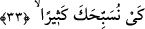
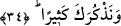

buyrulduğu üzere bu iş ancak Allâh’ın dilemesi ile olur.” denilirse şöyle cevap veririm:
Allâh’ın onun duâsını kabul etmesinden, bu duânın Allâh’ın izni ve ilhâmı ile olduğu
anlaşılır. Dinde yardımlaşma büyük bir derece olduğundan onu ancak kardeşi Hârun
için istemiştir.
Bu âyette sıradan insanlar bir tarafa, peygamberlerin bile hayırlı insanlarla beraber
olmaları ve onlardan destek almalarının iyi ve istenilen bir şey olduğuna işâret vardır.
İnsan kendi görüşünün doğruluğuna, gücünün ve kuvvetinin çokluğuna aldanmamalıdır.
Kendisi için istediği bir şeyi kardeşi için de istemelidir. İnsan, makam ve mevkilerde
kendine bir ortak isteyebilir. Nitekim Hârun (a.s.)’ın vezirliği Mûsâ (a.s.)’ın
peygamberliğine zarar vermemiştir. Ayrıca pek çok İsrailoğulları peygamberi bu
durumdaydı. Yani biri peygamber, diğeri de ona vezirdi. Mûsâ (a.s.) Şam’a peygamber
olarak gönderildiğinde Hârun (a.s.) Mısır’da idi.
33. Böylece seni bol bol tesbih edelim.
Yâni seni zâtına lâyık olmayan, Fir’avn’un iddiâ ettiği, fiil ve sıfatlardan tenzih
edelim. Bu âyet, son üç duânın gayesini bildirmektedir.
34. Ve seni çok çok analım.
Yâni her durumda seni daha çok zikredelim. Cemâl, celâl ve kemâl sıfatlarından sana
lâyık olanlarla seni vasfedelim. Çünkü yardımlaşma rağbetleri harekete geçirir ve
hayrın çoğalıp artmasına vesile olur.
et-Te’vîlâtü’n-Necmiyye’de şöyle der: “İşâret etmektedir ki hayır ve taatların
artırılması konusunda yardımlaşmada, seyr u sülûkün engellerinin aşılıp menzillerin
kat’edilmesinde uygunluk ve beraberlik konusunda sâlih arkadaşın ve sâdık dostun
etkisi büyüktür.”
Hâfız der ki:
Bu zamana dek bilemedim vah yazık
Ki mutluluk kimyası refiktir refik